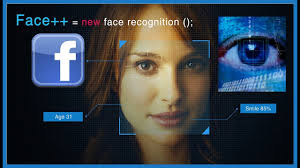
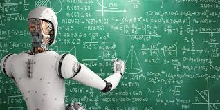

Artificial inteligence

Main applications of artificial intelligence
virtual assistants
Virtual assistants: its main function is to help users solve their queries and carry out certain actions. The interaction between the user and the virtual assistant will be based on the multi-device connection, 24/7 attention, fluid communication, ease of use, efficiency and immediate response.

Cognitive analysis
within this branch, all the fields that facilitate the understanding between man and machine are considered, such as Natural Language Processing, artificial vision and cognitive computing. Thanks to these fields, personalization tools, understanding of human behavior, segmentation and customer loyalty are built.

Pattern recognition
The purpose of this field is to extract information to identify the behavior of people and systems. In this way, their future behavior will be predicted to make the most appropriate decisions at all times. The most relevant applications of pattern recognition systems are handwritten or typed character recognition, fingerprint recognition, face recognition, object recognition, ...
Learning systems
the use of tools based on artificial intelligence is representing a real revolution in the field of education that allows creating educational systems and learning tools that are personalized and focused on the individual.

Robotics
Robotic process automation uses artificial intelligence algorithms and methods that mimic and automate human tasks to support corporate processes. It is a solution that makes it possible to make the most of purely human talent and move employees to more strategic and creative positions, so that their actions can really have an impact on the growth of the company.
